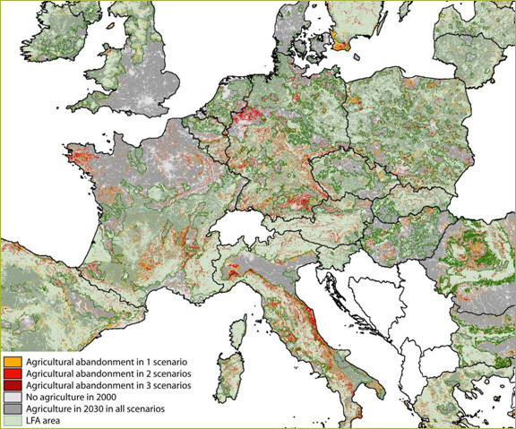
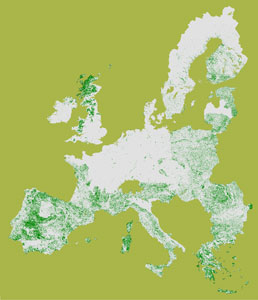
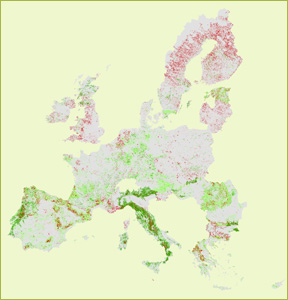
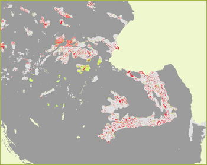

In this sheet Eururalis results for 2030 are combined with these EU maps. The following combinations have been made:
1. LFA and agricultural abandonment
In figure 1 a combined map is presented overlaying LFA areas and agricultural
abandonment for the Global Coordination, Continental Market and Regional Communities
scenarios. In these scenarios it is assumed that current LFA policies will be
continued. Areas with agricultural abandonment are projected to change from
agricultural land use types into (semi-)natural land cover. The change of agricultural
area into urban land-use is not regarded as agricultural abandonment.

Figure 1 – Combination of LFA policy map with
agricultural abandonment in 2030 in 1, 2 or 3 scenario’s.
.
Results show that agricultural abandonment occurs both inside and outside the
designated LFA areas. Model calculations have assumed EU-wide that LFA payments
compensate the unfavourable conditions of a location to an extent equal to 20%
of the difference in suitabily between the most and least productive locations
within Europe. The occurrence of land abandonment within the LFA areas indicates
that apparently this compensation is not enough to prevent abandonment from
happening in the LFA areas. Striking is the shift of abandonment to the edges
just outside of LFA areas. These areas do not get the payment but have, as compared
to the most suitable regions not very favourable conditions for agricultural
production.
Below some detailed examples show the potential developments for a number of
EU regions.
Central Italy:
Central Italy is one of the regions that is facing large areas of land abandonment.
C and D: Land abandonment in the very marginal areas (mountainous areas) will
continue in spite of LFA compensation.
A and B: While inside the LFA area the LFA compensation helps farmers to overcome
the negative conditions, areas that are just outside the LFA areas will be abandoned,
because given the LFA compensation in the LFA areas, these are now the areas
that are the least interesting to farm.
North Poland:
A. - LFA policies push land abandonment to the areas just outside the LFA areas.
B. - Some of the areas within the LFA areas will not also face land abandonment
in spite of the LFA compensation. The conditions are too marginal.
Portugal
A: Some of the marginal areas within the LFA loose agriculture in spite of LFA
compensation.
B: Outside the LFA areas some areas will be abandoned because the conditions
are not favourable either or cannot compete with farmers inside the LFA areas
that receive compensation
C: No abandonment will occur in these LFA areas.
South-Central France
A and B: In France large areas in the LFA zone will be abandoned in spite of
LFA compensation
C: On the edges of LFA regions farmers without LFA compensation will quit farming
D: Area with marginal agricultural conditions in Italy (Monferrato) without
LFA protection. Agriculture is likely to be abandoned unless specific products
or other rural development options are implemented; currently agriculture is
focused on wine production which is less sensitive to the unfavourable conditions
for other crops.
Sweden
A and D: The small and marginal agricultural part will be abandoned. Overall
many open agricultural enclaves disappear leading to more homogeneous landscapes.
B: Some parts in the central part of Sweden will remain under agricultural use
C: Some large areas of agriculture will be abandoned even if there is LFA subsidy
E: Abandonment is pushed out of the LFA area to the more favourable agricultural
areas. LFA compensation in this case has a trade-of for the most productive
region of Sweden. In the part of the region where LFA compensation applies agriculture
will not be abandoned.
2. HNV & agricultural abandonment
In figure 1 the High Nature Value farmlands (HNV) are indicated. In these areas
extensive and often traditional farming methods contribute to the biodiversity
and the attractiveness of the landscape. Loss of agricultural land-use would
mean loss of these extensive farming landscapes because natural succession will
in the end transform these areas to either forest or shrub vegetation.

Figure 2a – Areas with the High Nature Value
farmland status
Agricultural abandonment
Technological progress resulting in higher yields will result in a surplus of
agricultural land in the EU27 in most scenarios. In figure 2b the location of
agricultural abandonment is illustrated in two maps. The yellow color shows
abandoned land outside HNV areas, whereas the red color indicates agricultural
abandonment within HNV areas.
To illustrate the impact of the scenarios two scenarios with a significant agricultural abandonment are highlighted: Global Economy and Global Cooperation. In Global Economy about 12% of the EU27 agricultural area will be abandoned; in Global Co-operation this is 14%.
|
|
Figure 2b shows that in Global Economy abandonment will occur more in the HNV areas than in the Global Co-operation scenario. In Global Economy agriculture will produce there where it is most efficient, resulting in a retreat from marginal areas. Most HNV areas are found in relative marginal agricultural areas. |
The maps for Romania show an opposite picture of the EU27 general trend. Under the Global Co-operation scenario much more abandonment will occur mainly in the mountainous regions of the Carpats.
Southwest and Central FranceBoth maps show significant agricultural abandonment. In Global Economy the
HNV area affected is larger than in Global Co-operation. Consequences for the
biodiversity will be huge. Next to that these regions face a transformation
of their landscape and the social structure.
3. Natura 2000 & biodiversity
Natura2000 policy is implemented to safeguard and develop nature areas in Europe.
In figure 3a the Natura 2000 areas are illustrated. Figure 3b shows the development
of the biodiversity index for the Continental Market and the Global Coordination
scenario. Red areas on the map mean a decline of biodiversity and green areas
show an increase of biodiversity between 2000 and 2030. Grey areas are relatively
stable concerning their biodiversity index. The general picture shows a far
more positive future under Global Coordination conditions.
Figure 3a – Natura 2000 areas
|  |
Romania, Poland an Slovakia
In figure 3c a more detailed picture is given to indicate the consequences for
the Natura 2000 areas in a part of Eastern Europe. The maps show clear differences
between both scenarios. Again the Continental Market scenario shows more red
indicating a larger decline of biodiversity. Still also in the Global Coordination
scenarios biodiversity is under pressure in many Natura 2000 areas. Different
reasons are applicable depending on the specific locations: abandonment of extensive
pasture systems, urbanization or reclaiming natural vegetation for farming.
|  |
Spain and Portugal
Biodiversity is more stable in the Natura 2000 areas on the Iberian Peninsula.
Though both in Continental Market and Global Cooperation large red areas appear
on the map indicating a decline of the biodiversity index. Both scenarios show
a similar pattern of decrease. In the Cooperation scenario next to decreasing
hotspots there are also areas with more positive developments for biodiversity.